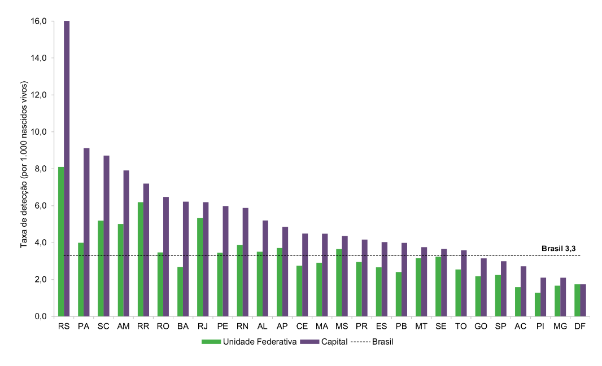
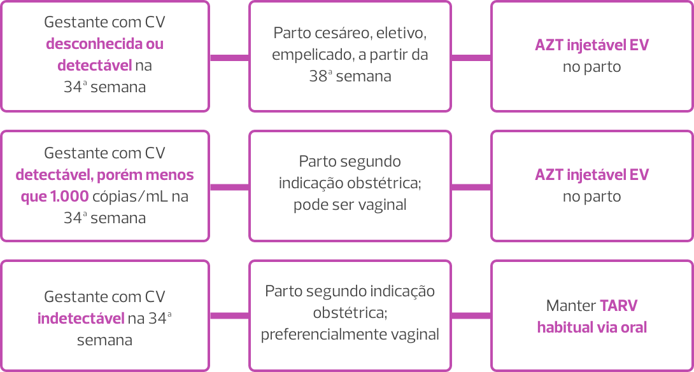

Aula 4
Extração Fetal Difícil na Cesariana
Introdução
A extração fetal difícil na cesariana (EFDC) é uma eventualidade de baixa incidência, associada ao aumento da morbidade materna e neonatal. Entre as diversas causas que dificultam a extração fetal durante cesarianas, destacam-se o polo cefálico profundamente impactado e a apresentação fetal flutuante.
Contemporaneamente, tem sido observado aumento das taxas de cesáreas realizadas no segundo estágio do trabalho de parto, frequentemente motivadas por falha ou falta de tentativa de parto vaginal operatório. Além disso, o aumento na prevalência de gestações de alto risco, que motivam interrupções mais precoces, favorece a ocorrência de outros fatores dificultadores da extração fetal, com destaque para baixo peso ao nascer e apresentações anômalas.
Apesar do avanço nos estudos relacionados às técnicas de manejo dos partos vaginais difíceis, as informações disponíveis referentes às dificuldades em cesáreas carecem de evidências científicas, sendo predominantemente provenientes de relatos de casos, pequenas séries de casos e opiniões de especialistas.
Portanto, treinar os obstetras nas habilidades relacionadas e investir em estudos com níveis de evidência e graus de recomendações mais robustos são ações imprescindíveis para otimizar o manejo da EFDC.
Principais causas de EFDC e os fatores associados
Vamos iniciar este tópico apresentando as principais causas de EFDC. Vamos lá?

Polo cefálico profundamente impactado
Os casos de polo
cefálico profundamente
impactado são frequentemente acompanhados de
prolongamento do período expulsivo e/ou falha na
tentativa de parto vaginal operatório.

Apresentação fetal flutuante
As apresentações fetais flutuantes se
associam a cesarianas realizadas na ausência de
trabalho de parto e a alterações na estática fetal
(situações transversas e oblíquas).
Existem outras causas para EFDC e entre elas destacam-se:

Feto de extremo baixo peso

Apresentações pélvica

Apresentação córmica

Placentas implantadas no segmento anterior

Leiomiomas uterinos

Presença do anel de Bandl nos quadros de eminência de rotura uterina
Associação entre a extração fetal difícil na cesariana e o espectro da placenta acreta
Sem dúvida, o trauma uterino é o principal fator causal do espectro da placenta acreta (EPA). Sendo assim, a cesariana se apresenta como o principal fator de risco. O processo de cicatrização das histerotomias, por meio de fibrose, origina um tecido sem elasticidade, que, quando tracionado, predispõe a danos adicionais, afinamento miometrial, deiscência, defeitos uterinos e exposição do colágeno, todos associados à etiologia do EPA. Esse mecanismo fisiopatológico explica a associação do EPA com múltiplas cesarianas e com outras causas de dano uterino, tais como dilatação e curetagem uterina.
A ocorrência de placentas gravemente invasivas em pacientes após a primeira cesárea e na ausência de outros fatores causais suscita a possibilidade de outros mecanismos produtores de defeito uterino primário. Extensos defeitos uterinos ocorrendo em pacientes operadas após a fase de dilatação avançada e/ou na vigência do período expulsivo já foram evidenciados. Nessas situações, em que a histerotomia habitualmente é realizada a poucos centímetros do orifício cervical interno, ocorre intensa ação da colagenase no segmento uterino baixo, resultando em modificações anatômicas. A cicatrização subsequente, com defeito na espessura total, favorece os quadros de deiscência espontânea do segmento uterino baixo.
Potencialmente, histerotomias transversas baixas comprometem a irrigação proveniente das artérias cervicouterinas e promovem áreas de hipovascularização no segmento uterino baixo. Nessas áreas, também é observada a ausência de desenvolvimento decidual abaixo da incisão uterina em gestações subsequentes, com presença apenas de âmnio nessas finas regiões. Histologicamente, o segmento integra o colo uterino e apresenta alta porcentagem de colágeno, que é progressivamente maior nas áreas próximas ao orifício cervical interno.
Portanto, o reparo primário dos defeitos de espessura total do segmento baixo apresenta alta taxa de recorrência espontânea, ao contrário das áreas segmentares mais superiores. Nos casos de deiscência espontânea do segmento uterino, as análises imunocitoquímicas dos defeitos de bordas revelam completa ausência dos fatores de crescimento, explicando a ruptura tecidual e a alta taxa de recorrência após o reparo primário.
Apesar de a elevada presença de colágeno no segmento uterino inferior propiciar a redução do sangramento de uma histerotomia e a facilitação da histerorrafia, os danos resultantes parecem ser altamente favorecedores ao desenvolvimento subsequente de EPA nessa topografia do útero. Já as porções superiores do segmento uterino, próximo à topografia da reflexão peritoneal, apresentam notáveis mudanças em sua espessura, maior provimento dos fatores de crescimento e melhor suprimento sanguíneo, proveniente de ramos diretos e anastomosados das artérias uterinas. Sendo assim, tendo como limite inferior o orifício cervical interno, três zonas podem ser identificadas no segmento uterino: uma curta superior, uma intermediária e outra inferior, a mais fina de todas, com altura de 2 a 4 cm, situada atrás e aderida à parede vesical.
Histerotomia

Princípios gerais facilitadores da extração fetal na cesariana
As principais estratégias para obtenção de extrações fetais atraumáticas em cesarianas são a realização de incisões de tamanho adequado e o relaxamento uterino farmacológico.
Diante da previsão de possíveis dificuldades para extração fetal, a incisão transversa da pele não deve ser inferior a 15 cm. A abertura da parede abdominal e a histerotomia também devem ser de tamanho adequado. A incisão uterina deve ser sempre superior a 10 cm. Deve-se avaliar a adoção de laparotomia ampliada de Maylard e de histerotomia segmentar transversa com expansão romba cefalocaudal. Nesta, após incisão do segmento uterino anterior, realizada com bisturi e pinça, o operador executa a histerotomia com expansão digital romba, com os dedos indicador e médio de uma das mãos tracionando em direção ao corpo uterino e os mesmos dedos da outra mão expandindo na direção do colo uterino. Essa técnica propicia uma abertura protetora das artérias uterinas e potencialmente mais ampla. Também com a intenção de prevenir lesões vasculares e ureterais, mas a despeito do maior risco de rotura uterina em gestações subsequentes, pode-se optar pela realização de histerotomias ampliadas, em T invertido ou em J.
Tipos de incisões na pele
Portanto, para a tomada de decisão por essas incisões, devem ser considerados a estática e o tamanho fetal, a localização da placenta, a presença de leiomiomas, o desenvolvimento do segmento uterino inferior e os planos futuros de gravidez. A extração da cabeça fetal deve ser preferencialmente realizada em occipitopúbico (OP) ou em occipitossacro (OS). Logo, o polo cefálico deve ser rodado para OP ou para OS, por meio da manobra de Geppert, e desprendido por histerotomia pelo seu diâmetro biparietal (9,5 cm), inferior ao diâmetro occipitofrontal (13 cm) das variedades de posição transversas.
Fisiopatologia e manejo do polo cefálico profundamente impactado
Quando todo o polo cefálico ocupa a vagina no período expulsivo, os tecidos vaginais se moldam à cabeça fetal, resultando em um efeito de “sucção”, semelhante ao promovido pelas campânulas dos vácuo-extratores. A imobilidade do polo cefálico ao exame vaginal e/ou a ausência de espaço entre a cabeça fetal e a sínfise púbica — confirmada pela dificuldade em se introduzir a mão que eleva e extrai o feto pela histerotomia durante a cesariana — evidenciam a insinuação profunda do polo cefálico. A impactação ocorre em aproximadamente 16% das cesáreas realizadas no período expulsivo e habitualmente se associa ao prolongamento do período expulsivo e/ou a tentativas malsucedidas de parto vaginal operatório.
No manejo do polo cefálico impactado, as manobras habituais de extração fetal são frequentemente realizadas com emprego de força excessiva, com maior probabilidade de trauma materno e fetal. São mais comuns lacerações do segmento uterino inferior, hematomas nos ligamentos uterinos e lesões dos vasos uterinos, colo uterino e/ou trato urinário. Quando associadas ao prolongamento do período expulsivo e/ou tentativas frustras de parto vaginal operatório, nem sempre é possível determinar se as lesões foram advindas somente das manobras executadas. Nesses casos, há alguns impactos relevantes:
O trauma uterino evolui com hemorragia pós-parto, e o risco de infecção puerperal é maior.
O neonato pode evoluir com lesões graves, tais como hemorragia intracraniana, fratura do crânio, lesões nervosas, fratura da coluna cervical, asfixia perinatal e até mesmo óbito.
O preparo da paciente e da equipe deve incluir orientações à parturiente e acompanhantes quanto aos desafios obstétricos vinculados à situação, discussão entre as equipes de obstetrícia, anestesiologia e enfermagem, e elaboração de um plano de extração fetal.
O preparo da paciente e da equipe deve incluir orientações à parturiente e acompanhantes quanto aos desafios obstétricos vinculados à situação, discussão entre as equipes de obstetrícia, anestesiologia e enfermagem, e elaboração de um plano de extração fetal.
O manejo pode ser otimizado por meio de relaxamento uterino adequado, de bom posicionamento da histerotomia e de inserção lenta e cuidadosa da mão que manipula o polo cefálico. O uso combinado da mão vaginal ou de instrumentos que elevam a cabeça fetal pode propiciar a extração controlada do polo cefálico. Se for planejado o parto abdominovaginal — que será explicado mais detalhadamente mais adiante neste tópico —, a parturiente deve ser rapidamente posicionada com os membros inferiores elevados, evitando-se, concomitantemente, a contaminação do campo cirúrgico. O tempo após a histerotomia deve ser cronometrado, registrado e comunicado aos envolvidos na assistência.
Em cesáreas realizadas durante períodos expulsivos prolongados, habitualmente a área da histerotomia é necessariamente maior. Sendo assim, conforme já pontuamos nesta aula, deve-se evitar a realização de histerotomias muito baixas, pois o risco de extensão da incisão até a vagina é maior, aumentando a probabilidade de lesão vesical e/ou ureteral e dificultando extremamente o reparo cirúrgico.
- Não atuar com pressa e força.
- Gastar alguns segundos avaliando a anatomia, mesmo diante de bradicardia fetal.
-
Não fletir o punho contra o miométrio, entre a incisão e o colo uterino.
Após o posicionamento lento da mão sob o polo cefálico, uma pressão deve ser aplicada na direção do abdome materno na intenção de elevar a cabeça e o corpo fetal. Opcionalmente, o assistente pode tentar deslocar os ombros fetais em direção à cabeça da mãe, enquanto o outro obstetra tenta extrair o polo cefálico pela histerotomia. A extração da cabeça fetal deve ser realizada somente quando ela estiver ocupando o abdome materno, totalmente desinserida da pelve. No cenário em que inexiste espaço para a penetração da mão entre o polo cefálico e a pube, a extração pode ser obtida posicionando-se a mão lateralmente à cabeça fetal. Essa estratégia é facilitada, uma vez que o diâmetro transverso da pelve é maior do que o anteroposterior. Mantendo o punho reto e o braço na linha média, evitando pressionar os ângulos uterinos, a mão é deslocada sob a face ou nuca fetal. Sequencialmente, o polo cefálico é fletido e elevado em direção à cabeça materna, mantendo-se o braço ereto e na linha média, paralelo ao corpo materno.
Várias manobras específicas podem ser utilizadas para o desprendimento abdominal de fetos profundamente impactados. Na extração abdominovaginal (push method) a parturiente é posicionada com as pernas flexionadas e abduzidas, podendo também ser apoiadas em estribos. Após assepsia e antissepsia abdominal e vaginal, um assistente insere uma mão vaginal pelo vazio sacral, apreende o polo cefálico e o desloca superiormente, desfazendo a impactação e facilitando a extração fetal pelos obstetras que realizam a cesariana. Os dedos do assistente devem se posicionar separados, buscando apreender a maior área possível da calota craniana, evitando-se pressões focais excessivas, potencialmente traumáticas. Pela via abdominal, um dos operadores realiza, simultaneamente, tração ascendente nos ombros fetais. Estando o feto desimpactado, o polo cefálico é flexionado e extraído pela histerotomia. Em situações de exceção, essa manobra pode ser realizada por um dos obstetras que realiza a cesárea. Enquanto uma das mãos é introduzida na vagina para elevar o polo cefálico, a outra é mantida no abdome para impedir sua deflexão. Imediatamente após a desimpactação, o operador deve trocar as luvas e completar a extração abdominal. Apesar de eficiente, essa manobra se associa mais a prolongamento da histerotomia, trauma uterino e das estruturas adjacentes, fraturas do crânio e morbidade fetal grave.
Extração abdominovaginal (push method)
Quando bem aplicadas por via vaginal combinada, as alavancas obstétricas (ou o ramo de um fórcipe) potencialmente reduzem a probabilidade de trauma uterino na extração abdominovaginal. Sistemas desimpactantes, tais como travesseiro fetal (fetal pillow), também têm sido utilizados e estudados. Esse dispositivo é descartável e possui um balão que é inserido abaixo do polo cefálico fetal logo antes da cesariana. Imediatamente antes da laparotomia, o balão é infundido com 180 mL de solução salina, propiciando elevação do polo cefálico entre 2 e 3 cm. O dispositivo é esvaziado e removido logo após o término da cesariana. Evidências iniciais, advindas de metanálise que incluiu estudos heterogêneos e predominantemente observacionais, indicam que o uso do travesseiro fetal se associa à redução do tempo entre a histerotomia e o parto, extensão da histerotomia, perda sanguínea, necessidade de hemotransfusão, outras complicações operatórias e permanência hospitalar. Também foi observado que foram menores a acidemia neonatal, os riscos de sepse neonatal e a necessidade de terapia intensiva neonatal.
O uso dos sistemas desimpactantes associados a protocolos de pesquisa, regulamentação clínica e sistemas de auditoria pode ser recomendado, porém a melhoria dos resultados maternos e neonatais necessita ser investigada a partir de estudos com maior evidência científica.
Na extração pélvica reversa (pull method), após histerotomia ampliada, a mão do operador deve ser inserida em direção ao fundo uterino. Os tornozelos fetais são apreendidos e tracionados inferiormente. A tração deve ser aplicada paralela ao eixo das pernas, evitando-se fraturar a tíbia e/ou a fíbula. Após a versão do polo pélvico, o parto é realizado como uma extração pélvica clássica, aplicando-se a manobra de Mauriceau-Smellie-Veit. Comparada com a extração abdominovaginal (push method), a extração pélvica reversa reduz o prolongamento da histerotomia, a perda sanguínea, a necessidade de hemotransfusão e o tempo cirúrgico.
Extração pélvica reversa (pull method)

Nas manobras de Patwardhan, descritas em 1957, a extração pélvica reversa é precedida e otimizada pela remoção dos membros superiores através da histerotomia e executada com as mãos do operador posicionadas no abdome e pelve do feto. A posição do dorso fetal determina o sequenciamento da remoção dos membros e os pontos de posicionamento das mãos e dedos do operador para a reversão do tronco fetal.
Para os fetos profundamente impactados e com dorso anterior, a manobra de Patwardhan indicada é “ombro primeiro”. Essa é a estática fetal mais incidente, habitualmente com variedades de posição oblíquas anteriores (occipito-esquerda-anterior [OEA] e occipito-direita-anterior [ODA]) ou OP. O sequenciamento se inicia com o desprendimento dos ombros por histerotomia, começando pelo braço mais facilmente acessível. Após o completo desprendimento dos braços, as mãos do operador são bilateralmente posicionadas na parte inferior do tronco fetal, com apoio dos dedos indicadores nas espinhas ilíacas posterossuperiores e dos outros quatro dedos no abdome fetal. O tronco é revertido por movimento de flexão, com desprendimento subsequente dos membros inferiores e da cabeça fetal, sem necessidade de manipulação desses segmentos corporais.
Manobra de Patwardhan – “ombro primeiro” com dorso anterior
Nos fetos com dorso lateral (à esquerda ou à direita), a manobra de Patwardhan indicada também é a “ombro primeiro”. As variedades de posição são, habitualmente, as transversas (occipito-esquerda-transversa [OET] e occipito-direita-transversa [ODT]). O sequenciamento se inicia com o desprendimento dos ombros, começando pelo braço anterior, que estará do mesmo lado do dorso fetal e mais facilmente acessível. Após o desprendimento do braço anterior, é necessário girar o tronco fetal para melhor posicionamento e desprendimento do braço posterior. Na sequência, o tronco será revertido e desprendido por movimento de flexão, seguido de desprendimento dos membros inferiores e da cabeça fetal.
Manobra de Patwardhan – “ombro primeiro” com dorso lateral
Já em fetos com dorso posterior, habitualmente em variedades de posição oblíquas posteriores (occipito-esquerda-posterior [OEP] e occipito-direita-posterior [ODP]) ou OS, duas são as manobras propostas por Patwardhan. A primeira é idêntica à extração pélvica reversa por pull method, em que a mão do operador, inserida no fundo uterino, apreende os tornozelos e os traciona inferiormente para obter a versão do polo pélvico e a extração pélvica clássica.
Manobra de Patwardhan – primeira proposta com dorso posterior
Na segunda manobra, o sequenciamento se inicia com desprendimento de um dos braços, o mais facilmente acessível. Em seguida, é desprendida a perna do mesmo lado do braço que foi removido. Na sequência, a perna do lado contralateral é desprendida. Após o desprendimento desses três membros, as mãos do operador são bilateralmente posicionadas na parte inferior do tronco fetal, com apoio dos dedos indicadores no abdome fetal e dos outros quatro dedos em cada lado do dorso fetal. O tronco é revertido e desprendido por movimento de flexão, seguido de desprendimento do braço que não foi previamente removido e da cabeça fetal.
Manobra de Patwardhan – segunda proposta com dorso posterior

Em uma metanálise de estudos observacionais, o prolongamento da histerotomia esteve mais associado à extração abdominovaginal (push method) do que às manobras de Patwardhan. Entretanto, em uma metanálise mais recente, que comparou a extração abdominovaginal com as manobras de Patwardhan, não foram encontradas diferenças entre as técnicas com relação à extensão da incisão uterina, hemotransfusão, lesões do trato urinário, hemorragia pós-parto, admissão em unidade de terapia intensiva neonatal e no índice de Apgar < 7 no quinto minuto, dificultando as recomendações práticas.
Fisiopatologia e manejo do polo cefálico flutuante
O polo cefálico não insinuado e flutuante é definido por sua altura no plano -3 de De Lee, ou acima. Nessa situação, o acesso à cabeça fetal é fácil na cesariana, porém a apreensão necessária para executar sua tração até a histerotomia é difícil de ser obtida. Em cesáreas realizadas em fetos mais ajustados na pelve, próximos da insinuação, quando a cabeça é elevada e fletida em direção à histerotomia, as forças uterinas a deslocam nessa mesma direção, que é a topografia de menor resistência. Contrariamente, na cabeça flutuante, as forças uterinas não a deslocam através da incisão, e a pressão realizada no fundo uterino se torna ineficiente, deslocando-a lateralmente.
Nessa situação, a versão podálica interna seguida de extração pélvica ou a extração com auxílio de vácuo-extrator, alavanca ou fórcipe são as opções mais fáceis e seguras, sendo a primeira habitualmente mais rápida. Vale destacar que há contraindicação ao uso do vácuo-extrator antes de 32 semanas e uso cauteloso entre 32 e 36 semanas, uma vez que o limite inferior de segurança para a idade gestacional ainda não está estabelecido.
Nesse cenário a versão difere da extração pélvica reversa (pull method), pois, estando o polo cefálico alto na pelve, o feto é internamente vertido antes da extração dos segmentos corporais, semelhante à versão realizada no parto vaginal do segundo gemelar com apresentação cefálica flutuante. O procedimento é realizado por meio da inserção de uma das mãos do operador profundamente no útero, seguida da apreensão de um ou de ambos os pés pelo(s) tornozelo(s) e tração dele(s) por meio de histerotomia. Simultaneamente, a outra mão, posicionada externamente ao útero, guia a cabeça fetal em direção ao fundo uterino.
Opcionalmente, fetos com cabeça flutuante podem ser extraídos com auxílio de instrumentos. Após histerotomia e amniotomia, uma campânula de vácuo-extrator, preferencialmente flexível, pode ser alocada no ponto de flexão da cabeça fetal. Em cesáreas, habitualmente a extração a vácuo é obtida sem maiores dificuldades, porque é mínima a resistência anatômica através de histerotomia.
Outras opções incluem o uso de alavancas e fórcipes. Existem alavancas idealizadas especificamente para EFDC que já estão disponíveis no Brasil. As alavancas também podem ser substituídas por um dos ramos dos fórcipes tradicionalmente utilizados em partos vaginais operatórios (Simpson, Kielland). Conforme o desejo e a experiência do obstetra, os fórcipes também podem ser utilizados com aplicação dos dois ramos, seguida da articulação, verificação da pega segura e tração. Existem instrumentos menores, desenhados especificamente para a extração fetal em cesárea, sendo mais comum no nosso meio o fórcipe de Marelli.
Fim da aula
A maior prevalência de gestações de alto risco, determinantes de interrupções mais precoces, e a evolução da terapia intensiva neonatal, propiciando maior sobrevida aos recém-natos prematuros, aumentaram a prevalência de cesarianas realizadas em fetos com baixo peso ao nascer e em apresentações anômalas.
A Pré-natal de Qualidade evoluiu contemporaneamente, com maior segurança e uso das cesarianas, que hoje, na maioria dos países, detêm índices acima daqueles das recomendações científicas. Paralelamente, a instrumentação no parto vaginal reduziu drasticamente, com maior despreparo da nova geração de obstetras, a incapacidade dos docentes para o ensino da prática e crescente judicialização médica relacionada a procedimentos.
Esse cenário determinou o aumento de cesáreas realizadas no segundo estágio do trabalho de parto, também frequentemente associadas a dificuldades de extração fetal. A aventada associação do EPA com histerotomias baixas, em particular com cesáreas realizadas no período expulsivo de fetos profundamente impactados, adiciona um risco obstétrico de alta letalidade. Sendo assim, a aquisição de habilidades e competências relacionadas à Pré-natal de Qualidade, ao uso de fórcipes e vácuos-extratores na via vaginal do parto e às manobras específicas para o desprendimento fetal difícil em cesarianas se tornou imprescindível no processo atual de formação dos obstetras, justificando a importância de otimizar o estudo desse tema.
Agora, vamos revisitar algumas informações importantes desta aula?
- As principais causas de EFDC são polo cefálico profundamente impactado e apresentação fetal flutuante.
- Os estudos das técnicas de manejo da EFDC e de seus resultados maternos e neonatais carecem de evidência científica, sendo predominantemente provenientes de relatos de casos, pequenas séries de casos e opiniões de especialistas.
- O polo cefálico profundamente impactado habitualmente se associa ao prolongamento do período expulsivo e/ou a tentativas malsucedidas de parto vaginal operatório.
- As principais complicações maternas associadas ao manejo do polo cefálico profundamente impactado são lacerações do segmento uterino inferior, hematomas nos ligamentos uterinos e lesões dos vasos uterinos, colo uterino e/ou trato urinário.
- As principais complicações neonatais associadas ao manejo do polo cefálico profundamente impactado são hemorragia intracraniana, fraturas do crânio e/ou da coluna cervical, lesões nervosas, asfixia perinatal e até mesmo óbito.
- Entre as manobras para o desprendimento do polo cefálico profundamente impactado, a extração abdominovaginal (push method) parece ser a que mais se associa a complicações maternas e neonatais.
- No polo cefálico não insinuado e flutuante, a versão podálica interna seguida de extração pélvica difere da extração pélvica reversa (pull method), pois, estando o polo cefálico alto na pelve, o feto é internamente vertido antes da extração de seus segmentos corporais, semelhante à versão interna realizada no parto vaginal do segundo gemelar com apresentação cefálica flutuante.
Recomendações
- As principais estratégias para obtenção de extrações fetais atraumáticas em cesarianas são a realização de incisões de tamanho adequado e a instituição de relaxamento farmacológico corporal e uterino.
- Reparar os defeitos de espessura total do miométrio e realizar histerotomias na zona superior do segmento uterino parece contribuir para eliminar o risco de espectro da placenta acreta associado a histerotomias baixas realizadas em fases avançadas do trabalho de parto e mediante dificuldade de extração fetal.
- O preparo do manejo do polo cefálico profundamente impactado deve incluir orientações da parturiente e de seus acompanhantes quanto aos desafios obstétricos, discussão entre as equipes de obstetrícia, anestesiologia e enfermagem, e elaboração de um plano de extração fetal. Estão recomendados o relaxamento uterino e um bom posicionamento da histerotomia. A mão que manipulará a cabeça fetal deve ser lenta e cuidadosamente inserida. No parto abdominovaginal, a parturiente deve ser posicionada com os membros inferiores elevados, e o tempo após a histerotomia deve ser cronometrado, registrado e comunicado.
- No manejo do polo cefálico profundamente impactado, histerotomias muito baixas devem ser evitadas. Não se deve atuar com pressa e força, e devem ser gastos alguns segundos para avaliação da anatomia, mesmo na presença de bradicardia fetal. Na manipulação da cabeça fetal, o operador não deve fletir o punho contra o miométrio, entre a incisão e o colo uterino.
- As principais manobras para o desprendimento abdominal de fetos profundamente impactados são: extração abdominovaginal (push method), extração pélvica reversa (pull method) e manobras de Patwardhan.
- Na extração abdominovaginal, o uso associado de alavancas obstétricas (ou um ramo de fórcipe) ou de sistemas não impactantes (“travesseiro fetal”) potencialmente reduzem a probabilidade de trauma uterino e demais complicações.
-
No polo cefálico não insinuado e flutuante, a versão podálica interna seguida de extração pélvica ou a extração com auxílio de vácuo-extrator, alavanca ou fórcipe são as opções mais fáceis e seguras, sendo a primeira habitualmente a mais rápida.
Você concluiu esta aula, continue se empenhando nos seus estudos. Siga para a próxima aula!